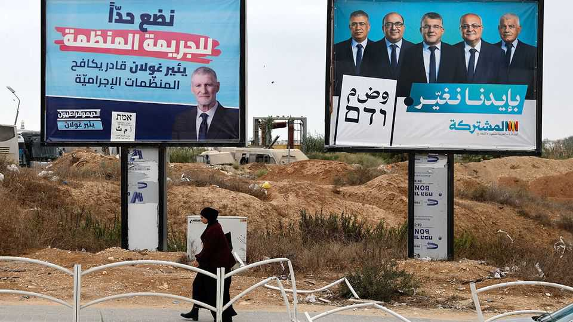

Israel’s Arab parties could be the kingmakers in its election
They are eager to change the government

Oct 15th 2026
In A campaign video released on October 10th Yousef Jabareen, leader of the Joint List, a slate of candidates from three predominantly Arab-Israeli parties, made a striking announcement. The bloc would “use all the tools” at its disposal to replace the government and “serve as a safety net” for the opposition. For most of Israel’s history, they have stayed on the sidelines, in opposition. But this year, for the first time in an Israeli election, all the parties representing Israel’s Palestinian citizens have vowed to try to change the government.
“This is an existential election for Jews and Arabs,” says Ahmed Tibi, head of the Arab Movement for Change, one of the parties in the Joint List. “The levels of racism and incitement from this fascist government are simply too great. We’ll do almost anything to kick them out.” This should mean Binyamin Netanyahu and his allies can be beaten. The Economist’s poll tracker has his opponents, Jewish and Arab, together averaging 64 seats in the 120-seat Knesset, Israel’s parliament. And yet the Arab parties remain unwelcome.
For decades the parties representing Arab voters, who make up around 20% of the electorate, stayed outside the post-election coalition wrangling. But since the 1980s they have endorsed candidates for prime minister and in 1992, they formed a de facto bloc with centre-left parties to prevent the right-wing Likud party from forming a coalition. In 2021 Ra’am, a small conservative-Islamist party broke away from the Joint List, insisting it wanted to go further, and that it would join any government in which it could have some influence on behalf of Arab voters.
In that year’s election Ra’am passed the electoral threshold of 3.25% of the vote on its own, winning seats in the Knesset. Ra’am’s leader, Mansour Abbas, held talks with Mr Netanyahu about joining his government. Mr Netanyahu’s far-right allies scuppered that plan. But weeks later Ra’am became the first independent Arab party to join a coalition when it voted in favour of a short-lived government formed by Naftali Bennett. In the next year’s poll, Ra’am did even better.
The Joint List, which in 2021 broke with Ra’am because of Mr Abbas’ willingness to consider joining a coalition, is now following its lead. Yousef Makladeh, who runs the Statnet Research Institute, says that in his polls “the overwhelming majority of Arab voters put replacing the government and fighting the crime wave in our communities above all other issues, including the war in Gaza and solving the Israel-Palestinian conflict.” Crime-related murders in Arab communities have doubled during the four years of the current government. Many among them blame the far-right national-security minister, Itamar Ben-Gvir, accusing him of intentionally diverting policing resources away from their towns.
Ra’am has put a prominent Jewish politician, Yoav Segalovich, a former police commander, on its list. They hope he will boost their crime-fighting credentials as well as increase their appeal to non-Arab voters. The Joint List reckons this is going too far. “Unlike Ra’am, we have conditions, such as a future diplomatic process with the Palestinians,” says one Joint List campaigner. But, he concedes, “a vague commitment will be enough.”
Among Israel’s Palestinians 77% say an Arab party should join the country’s government, according to the Moshe Dayan Centre at Tel Aviv University. And yet among the four main opposition parties only the left-leaning Democrats openly favour an alliance with them. Yisrael Beitenu (Israel Our Home), a nationalist party, is firmly opposed. Gadi Eisenkot, Mr Netanyahu’s main challenger, and Mr Bennett, a former prime minister, who lead the two big centre-right parties, are evasive. Mr Netanyahu’s campaign has accused them of planning to form a government with Israel’s Arabs. Their equivocation reflects their fear that such accusations will be electorally damaging. Since October 7th and the war in Gaza, attitudes among Jewish Israelis towards Palestinians have hardened. According to one poll, a majority of Israelis support barring the Arab parties from even running. The Knesset’s electoral commission tried to disqualify them (the Supreme Court blocked the efforts).
Even if they do not formally join a coalition, the Arab parties could still support a minority government led by Mr Eisenkot, in a confidence-and-supply deal. “There are a lot of things we could do together without joining the government,” says Mr Tibi, though he insists there have been no talks so far with Mr Eisenkot or his party. “There will be time after the election. Why give Netanyahu ammunition?” ■